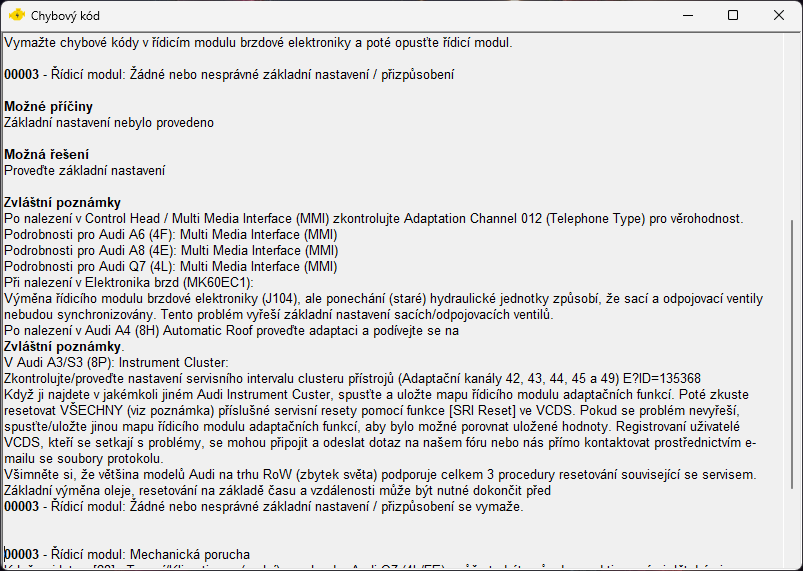
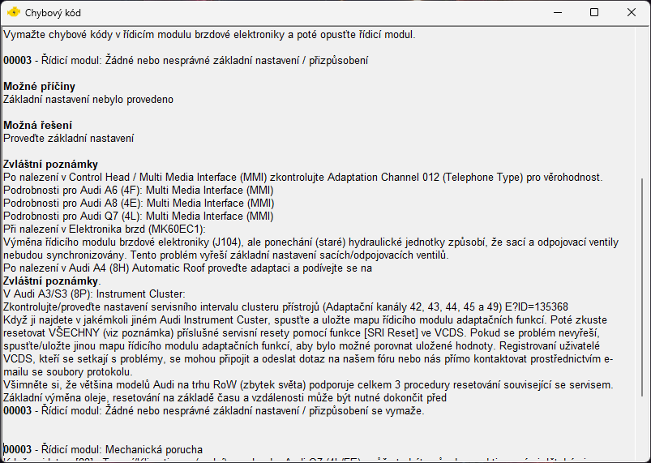

Download
Nástroj pro spuštění diagnostiky a vyhledávání chyb. Tato aplikace vám zjednoduší a urychlí spuštění diagnostického nástroje VCDS a zároveň umožní rychlé vyhledávání chybových kódů.
Poslední Aktualizace:
 

Poznámka: Autor neodpovídá za případné škody způsobené nesprávným použitím aplikace nebo diagnostického nástroje VCDS. Používání aplikace a VCDS je na vlastní riziko.